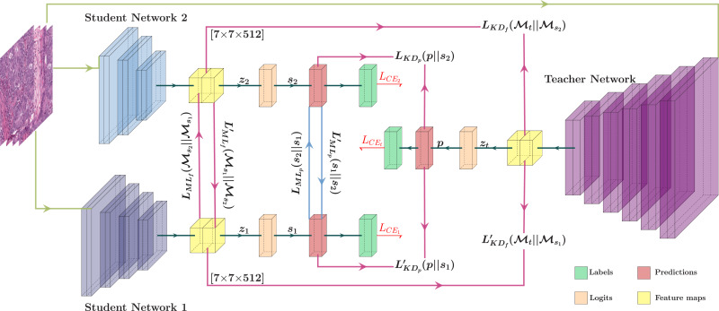
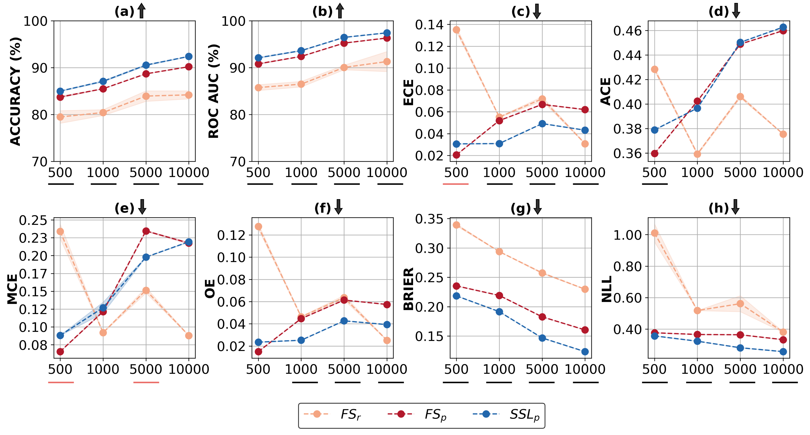
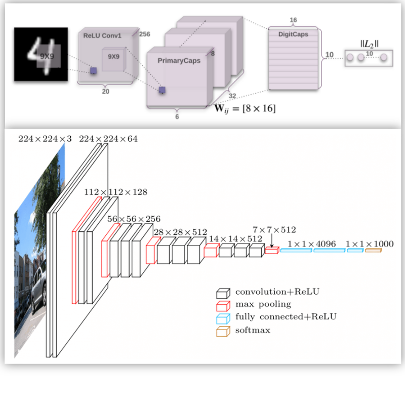
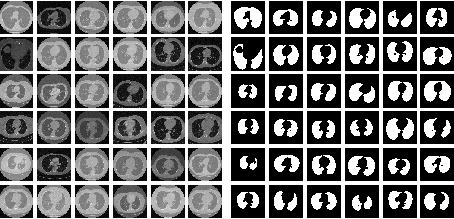
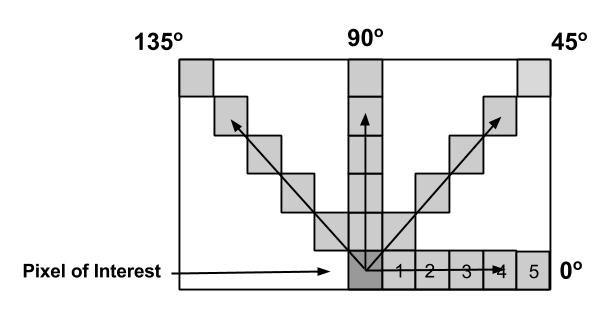

|
Recent News
|
- 11 Aug 2024 Received MICCAI 2024 RISE Registration Grant for our paper. Thanks, MICCAI Society!
- 17 Jun 2024 Our work on "LS+: Informed Label Smoothing for Improving Calibration in Medical Image Classification" is accepted in MICCAI 2024. Paper link will be added soon.
- 27 Feb 2024 Our work on "Mutually Exclusive Multi-Modal Approach for Parkinson's Disease Classification" won the best student paper award in Bioimaging 2024.
- 02 Feb 2024 Our work on "Wavelet-Based Feature Compression for Improved Knowledge Distillation" is accepted in ISBI 2024. Paper link will be added soon.
- 22 Nov 2023 Our work on "Leveraging Different Learning Styles for Improved Knowledge Distillation in Biomedical Imaging" is accepted in Computers in Biology and Medicine (CBM) journal.
- 15 Sep 2023 Our work on "Understanding Calibration of Deep Neural Networks for Medical Image Classification" is accepted in Computer Methods and Programs in Biomedicine (CMPB) journal.
---- more ----
- 27 Jul 2023 Presented our previous work "A novel data augmentation approach to reducing aleatoric uncertainty in medical image analysis." at India-Dalhousie Student Research Symposium: Addressing Common Challenges via Research & Innovation.
- 24 Mar 2023 Presented our work "Medical Image Analysis - Does Self-Supervised Learning Improve Calibration?" at Bern Interpretable AI Symposium (BIAS), University of Bern.
- 11 Feb 2022 Completed my thesis proposal seminar. I am now a PhD Candidate!
- 07 Jan 2022 Paper "Towards Reducing Aleatoric Uncertainty for Medical Imaging Tasks" accepted in ISBI 2022.
- 18 Jul 2021 Attending International Conference on Machine Learning (ICML) 2021 (Online).
- 30 Sep 2020 Attending Medical Imaging MONAI Bootcamp 2020.
- 17 Aug 2020 Attending Oxford Machine Learning Summer School 2020 (OxML).
|
|

|
Leveraging Different Learning Styles for Improved Knowledge Distillation in Biomedical Imaging
Usma Niyaz, Abhishek Singh Sambyal, Deepti R. Bathula
Computers in Biology and Medicine, 2023
abstract
journal
arxiv
bibtex
Learning style refers to a type of training mechanism adopted by an individual to gain new knowledge. As suggested by the VARK model, humans have different learning preferences, like Visual (V), Auditory (A), Read/Write (R), and Kinesthetic (K), for acquiring and effectively processing information. Our work endeavors to leverage this concept of knowledge diversification to improve the performance of model compression techniques like Knowledge Distillation (KD) and Mutual Learning (ML). Consequently, we use a single-teacher and two-student network in a unified framework that not only allows for the transfer of knowledge from teacher to students (KD) but also encourages collaborative learning between students (ML). Unlike the conventional approach, where the teacher shares the same knowledge in the form of predictions or feature representations with the student network, our proposed approach employs a more diversified strategy by training one student with predictions and the other with feature maps from the teacher. We further extend this knowledge diversification by facilitating the exchange of predictions and feature maps between the two student networks, enriching their learning experiences. We have conducted comprehensive experiments with three benchmark datasets for both classification and segmentation tasks using two different network architecture combinations. These experimental results demonstrate that knowledge diversification in a combined KD and ML framework outperforms conventional KD or ML techniques (with similar network configuration) that only use predictions with an average improvement of 2%. Furthermore, consistent improvement in performance across different tasks, with various network architectures, and over state-of-the-art techniques establishes the robustness and generalizability of the proposed model.
@article{NIYAZ-cbm-2023,
title = {Leveraging different learning styles for improved knowledge distillation in biomedical imaging},
journal = {Computers in Biology and Medicine},
volume = {168},
pages = {107764},
year = {2024},
issn = {0010-4825},
doi = {https://doi.org/10.1016/j.compbiomed.2023.107764},
author = {Usma Niyaz and Abhishek Singh Sambyal and Deepti R. Bathula},
}
|
|

|
Understanding Calibration of Deep Neural Networks for Medical Image Classification
Abhishek Singh Sambyal, Usma Niyaz, Narayanan C. Krishnan, Deepti R. Bathula
Computer Methods and Programs in Biomedicine, 2023
abstract
journal
arxiv
bibtex
In the field of medical image analysis, achieving high accuracy is not enough; ensuring well-calibrated predictions is also crucial. Confidence scores of a deep neural network play a pivotal role in explainability by providing insights into the model's certainty, identifying cases that require attention, and establishing trust in its predictions. Consequently, the significance of a well-calibrated model becomes paramount in the medical imaging domain, where accurate and reliable predictions are of utmost importance. While there has been a significant effort towards training modern deep neural networks to achieve high accuracy on medical imaging tasks, model calibration and factors that affect it remain under-explored. To address this, we conducted a comprehensive empirical study that explores model performance and calibration under different training regimes. We considered fully supervised training, which is the prevailing approach in the community, as well as rotation-based self-supervised method with and without transfer learning, across various datasets and architecture sizes. Multiple calibration metrics were employed to gain a holistic understanding of model calibration. Our study reveals that factors such as weight distributions and the similarity of learned representations correlate with the calibration trends observed in the models. Notably, models trained using rotation-based self-supervised pretrained regime exhibit significantly better calibration while achieving comparable or even superior performance compared to fully supervised models across different medical imaging datasets. These findings shed light on the importance of model calibration in medical image analysis and highlight the benefits of incorporating self-supervised learning approach to improve both performance and calibration.
@article{understandingcalibration-2023,
title = {Understanding calibration of deep neural networks for medical image classification},
journal = {Computer Methods and Programs in Biomedicine},
volume = {242},
pages = {107816},
year = {2023},
issn = {0169-2607},
doi = {https://doi.org/10.1016/j.cmpb.2023.107816},
author = {Abhishek Singh Sambyal and Usma Niyaz and Narayanan C. Krishnan and Deepti R. Bathula},
}
|
|
|
Towards Reducing Aleatoric Uncertainty for Medical Imaging Tasks
Abhishek Singh Sambyal, Narayanan C. Krishnan, Deepti R. Bathula
IEEE 19th International Symposium on Biomedical Imaging (ISBI), 2022
abstract
presentation
poster
arxiv
bibtex
In safety-critical applications like medical diagnosis, certainty associated with a model’s prediction is just as important as its accuracy. Consequently, uncertainty estimation and reduction play a crucial role. Uncertainty in predictions can be attributed to noise or randomness in data (aleatoric) and incorrect model inferences (epistemic). While model uncertainty can be reduced with more data or bigger models, aleatoric uncertainty is more intricate. This work proposes a novel approach that interprets data uncertainty estimated from a self-supervised task as noise inherent to the data and utilizes it to reduce aleatoric uncertainty in another task related to the same dataset via data augmentation. The proposed method was evaluated on a benchmark medical imaging dataset with image reconstruction as the self-supervised task and segmentation as the image analysis task. Our findings demonstrate the effectiveness of the proposed approach in significantly reducing the aleatoric uncertainty in the image segmentation task while achieving better or on-par performance compared to the standard augmentation techniques.
@inproceedings{trau,
title={Towards Reducing Aleatoric Uncertainty for Medical Imaging Tasks},
author={Sambyal, Abhishek Singh and Krishnan, Narayanan C and Bathula, Deepti R},
booktitle={2022 IEEE 19th International Symposium on Biomedical Imaging (ISBI)},
year={2022},
pages={1-4},
doi={10.1109/ISBI52829.2022.9761638}
}
|
|

|
Advances in Deep Learning Techniques for Medical Image Analysis
Usma Niyaz, Abhishek Singh Sambyal, Devanand
Fifth International Conference on Parallel, Distributed and Grid Computing (PDGC), 2018
abstract
bibtex
Deep learning is contributing to the high level of services to the healthcare sector. As the digital medical data is increasing exponentially with time, early detection and prediction of diseases are becoming more efficient because of the deep learning techniques which reduce the fatality rate to a great extent. The main focus of this paper is to provide the comprehensive review of deep learning in the domain of medical image processing and analysis. We have demonstrated the use of new deep learning architectures in oncology for the prediction of different types of cancer like the brain, lung, skin, etc. The state-of-the-art architectures effectively carry out analysis of 2D and 3D medical images to make the diagnosis of patients faster and more accurate. The use of popular approaches in machine learning such as ensemble and transfer learning with fine-tuning of parameters improve the performance of the deep neural networks in medical image analysis. The existing deep networks urge the new image classification network called Capsule Network (CapsNet) to make the classification and detection comparatively better. The equivariance characteristics of CapsNet make it more influential as it discourages the effect of any structural invariance of an input image on the network.
@inproceedings{adlt,
title={Advances in Deep Learning Techniques for Medical Image Analysis},
author={Niyaz, Usma and Sambyal, Abhishek Singh and Devanand},
booktitle={2018 Fifth International Conference on Parallel, Distributed and Grid Computing (PDGC)},
year={2018},
doi={10.1109/PDGC.2018.8745790}
}
|
|

|
Evaluation of Deep Learning Model with Optimizing and Satisficing Metrics for Lung
Segmentation
Usma Niyaz, Abhishek Singh Sambyal, Devanand
Soft Computing for Problem Solving (SocProS)[Proceedings in AISC], 2018
abstract
bibtex
The segmentation in medical image analysis is a crucial and prerequisite process during the diagnosis of the diseases. The need for segmentation is important to attain the region of interest where the probability of occurrence of an abnormality such as a nodule in the lungs or tumor in the brain is high. In this paper, we have proposed a new architecture called FS-Net which is a convolutional neural network- based model for the segmentation of lungs in CT scan images. It performs encoding of images into the feature maps and then decodes the feature maps into their respective lung masks. We have also trained the state-of-the-art U-Net on the same dataset and compared the results on the basis of optimizing and satisficing metrics. These metrics are useful for the selection of a better model with the maximum score at the satisfying condition. The FS-Net is computationally very efficient and achieves promising dice coefficient and loss score when compared with the U-Net taking one-third of the time.
@inproceedings{osm,
title={Evaluation of Deep Learning Model with Optimizing and Satisficing Metrics for Lung Segmentation},
author={Niyaz, Usma and Sambyal, Abhishek Singh and Padha, Devanand},
booktitle={Soft Computing for Problem Solving},
year={2020}
}
|
|

|
Knowledge abstraction from textural features of brain MRI images for diagnosing brain tumor
using statistical techniques and associative classification
Abhishek Singh Sambyal, Asha T.
International Conference on Systems in Medicine and Biology (ICSMB), 2016
abstract
bibtex
code
This paper presents a methodology for finding the association rules using associative classification which can be used to abstract knowledge from brain MRI images. Reducing the size of images using different thresholds help to reduce the complexity of the proposed system without affecting the correctness of these images. Textural features are taken into consideration because when there is a wide variation of features of discrete gray tone, the texture dominates more. Gray-Tone Spatial-Dependence matrices are calculated from images in which textural information is contained. The system uses a supervised learning approach for selecting the important features from different textural features. Using associative classification, the rules are generated from selected textural features which abstract the knowledge from the images.
@inproceedings{knowabs,
title={Knowledge abstraction from textural features of brain MRI images for diagnosing brain tumor using
statistical techniques and associative classification},
author={Sambyal, Abhishek Singh and Asha, T.},
booktitle={2016 International Conference on Systems in Medicine and Biology (ICSMB)},
year={2016},
doi={10.1109/ICSMB.2016.7915086}
}
|
|